Практичний досвід · журнал «ДентАрт» 2022 №2
Особливості реставрації зубів і зубних рядів
Поетапний клінічний протокол функціональної реабілітації
Features of the tooth and dentition restoration. Step-by-step clinical protocol for functional rehabilitation
Сучасний підхід до реконструкції зубів і зубних рядів пацієнтів у постортодонтичному статусі полягає у створенні не тільки довгоочікуваної і такої жаданої для пацієнта естетики, але також необхідних умов досягнення оптимальної оклюзії та стабілізації її після лікування. У цьому клінічному прикладі подано консервативний варіант постортодонтичного відновлення при легких і помірних формах стирання та ерозії зубів, з реконструкцією лінії усмішки у прямій адгезивній техніці.
Поширеним сценарієм після ортодонтичного лікування є необхідність корекції контактних просторів, особливо якщо деякі зуби мають незвичні анатомічні розміри. При плануванні лікування слід брати до уваги всі чинники початкової ситуації, які впливають на кінцевий результат. Аналізований клінічний випадок крок за кроком демонструє відновлення естетики після ортодонтичного лікування найбільш консервативним шляхом.
Початкова клінічна ситуація
Пацієнтка звернулася до нас через десять років після закінчення ортодонтичного лікування. Дуже часто пацієнти звертаються до стоматолога не лише за здоров'ям зубів, а й за красою усмішки.
В анамнезі: пацієнтка достатньо давно закінчила лікування брекет-системою, і на момент закінчення лікування результат, за словами пацієнтки, був задовільний з естетичного і функціонального боку. Через деякий час, коли відклеївся ретейнер на верхньому зубному ряду, пацієнтка помітила, що між центральними зубами з’явилася відстань.
Основна скарга пацієнтки в момент звернення до нас була на незадовільну естетику фронтальних зубів, а головним її бажанням було приховати відстань між центральними різцями, яка знову з'явилася через деякий час після ортодонтичного лікування. Від повторного звернення до ортодонта пацієнтка відмовилася категорично.
Також є стертість зубів, що є наслідком бруксизму, який серйозно сприяв зниженню висоти прикусу у пацієнтки. Ситуація ускладнена плоскими оклюзійними поверхнями раніше виконаних реставрацій на бічних зубах верхньої та нижньої щелеп.
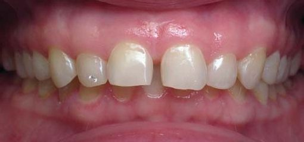
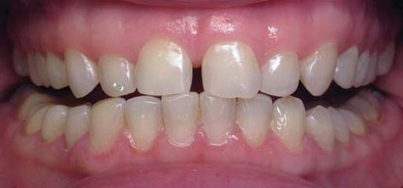
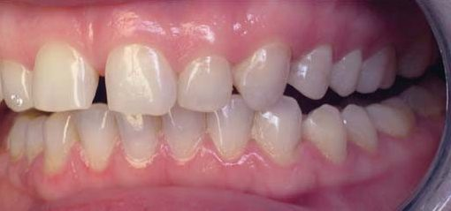
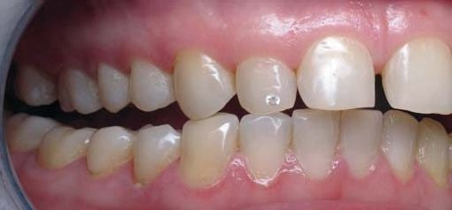
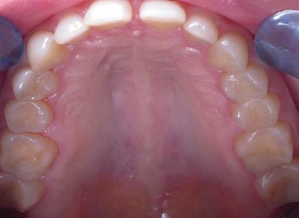
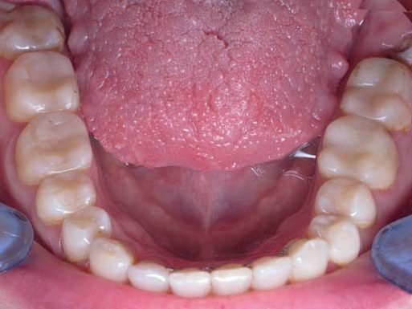
Методом вибору для вирішення завдань, що постають, є модифікація передніх зубів за допомогою композиту, з попереднім відновленням коректної висоти прикусу в бічних сегментах, яка б розвантажила фронтальні ділянки. Відомо, що однією з основних причин деформацій зубних рядів у передній ділянці є перевантаження або недостатня висота в бічних ділянках.
Планування реставрації
При плануванні системного відновлення під час реконструктивного втручання ключовим є етап діагностики. План лікування ґрунтується на діагнозі, а діагноз — на правильній діагностиці. Враховуються дані не лише огляду та фотореєстрації, а також рентгендіагностики, 3D-знімків, міографічних досліджень.
Діагноз: Дистальний глибокий прикус. Діастема. Зміщення нижньої щелепи праворуч. Стирання зубів I ступеня.
Зі стоматологічної точки зору стирання зубів характеризується втратою емалі та дентину без бактеріальної інвазії. Ця втрата має свої біологічні наслідки: підвищення чутливості зубів та ризик каріозних уражень. Страждають функціональні співвідношення зубів — порушуються іклове та різцеве ведення, які захищають зуби від подальшого стирання і перевантаження.
Багатьох пацієнтів турбують і естетичні зміни, що відбуваються в міру підвищення зношуваності зубів: зуби стають коротшими, сколюються ріжучі краї.
Сучасний підхід до таких клінічних випадків сфокусований на ранньому своєчасному консервативному втручанні, якому передує повне етіологічне обстеження з наступним регулярним контролем та підтримкою отриманого результату. Процедура має бути мінімально інвазивною і забезпечити довготривалий результат.
Досягнення адгезивної стоматології уможливили розширене застосування композитних реставрацій при консервативному підході у прямій техніці виконання. Останні покоління композитів здатні витримувати механічний стрес і мають чудові естетичні можливості. Така реставрація має опиратися на біологічні структури своїх тканин.
Етапи реставрації
Пряма реставрація верхніх бічних зубів
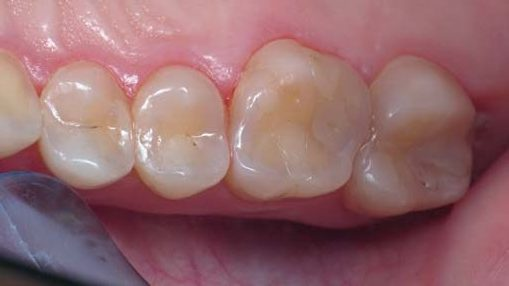
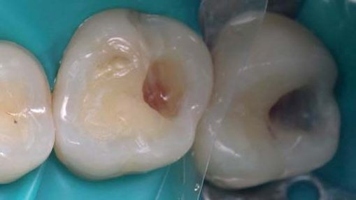
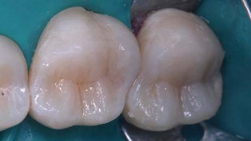
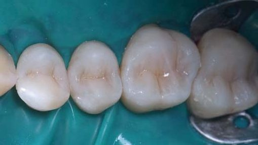
Після видалення старих пломб зроблено препарування та очищення поверхонь зубів, адгезивну підготовку тканин методом селективного протравлювання та внесення адгезивної системи Prime&Bond Universal. Для реставрації бічних зубів використовувався високонаповнений наногібридний матеріал Esthet-X HD (відтінки А1, YE), що дозволяє створити правильну анатомію, функцію та нове вертикальне оклюзійне співвідношення.
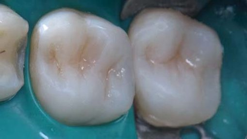
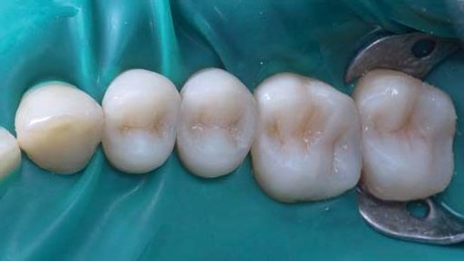
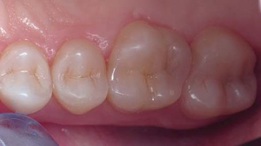
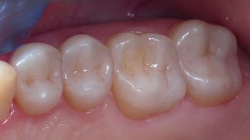
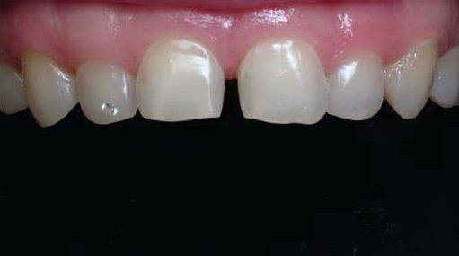
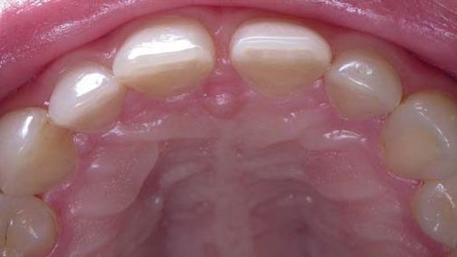
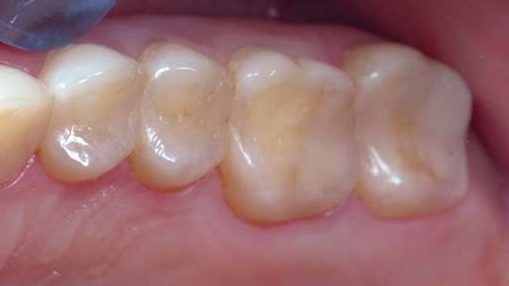
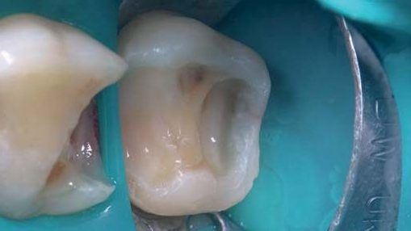
Пряма реставрація верхніх передніх зубів
Гармонія передньої ділянки верхнього зубного ряду відсутня через асиметричність і диспропорційність верхніх передніх зубів, але особливий дисонанс у фронтальну естетику вносить діастема між центральними різцями. Після розрахунку фронтальної ділянки верхнього зубного ряду за принципом «золотого перерізу» та визначення довжини фронтальної ділянки виявлено гармонійні розміри зубів у фронтальному сегменті.
Розрахунок зубного ряду дозволяє визначити пропорційність і симетричність зубів та зубних рядів, виявити порушення і їх можливі причини, а також відновити всі ці елементи з контролем штангенциркулем на кожному етапі реставрації.
До проведення розрахунків важливо визначитися з колірною конструкцією реставрації. На запит та вибір пацієнтки був застосований рецепт, який дозволив зробити реставрацію зі спецефектом натуральних, але відбілених зубів. Оскільки за такого типу стирання топографічні межі втрачених тканин охоплюють зону тільки основної та прозорої емалі, колірна конструкція реставрації включила лише емалеві імітатори високонаповненого наногібридного матеріалу Esthet-X HD (відтінки XL, YE). Під час оперативної підготовки поверхні емалевого об’єму використовувалися фінішні бори для забезпечення принципів мінімальної інвазії.
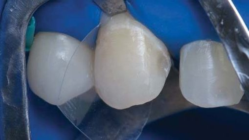
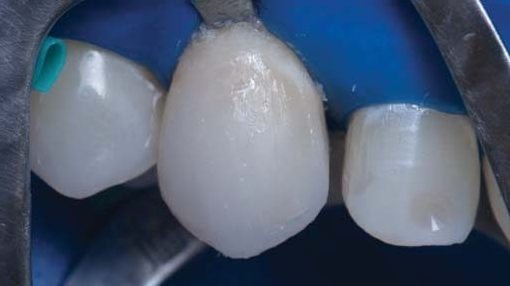
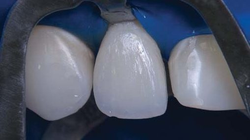
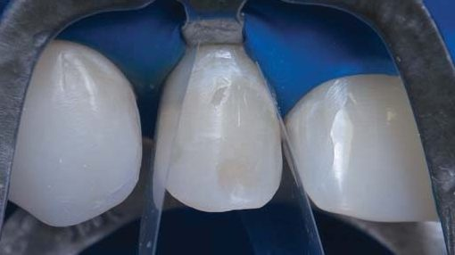
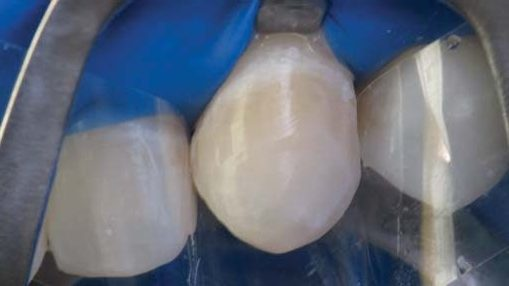
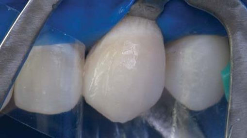
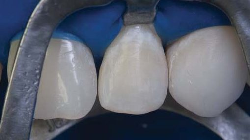
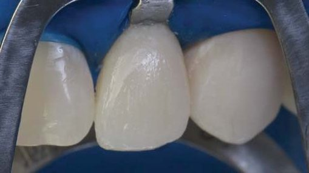
Наступним етапом було виготовлення мокапа з композиту, з подальшою фотореєстрацією лінії усмішки та проведенням фонетичних проб. Мокап виготовляється без ізоляції рабердамом у техніці точкового протравлювання, це цілком зворотна маніпуляція.
Завдяки мокапу оператор зможе оцінити проєкт значного втручання у центральні різці з естетичної та функціональної точки зору. Слід звернути увагу на видиме положення зубів у стані спокою, лінії усмішки, паралельність лінії ріжучих країв та лінії нижньої губи у стані усмішки, розташування ріжучих країв щодо облямівки губ при проведенні фонетичних проб, паралельність оклюзійної площини з лінією горизонту комісуральної лінії губ.
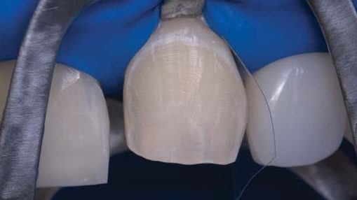
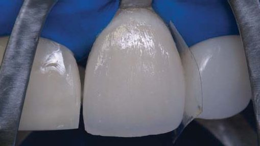
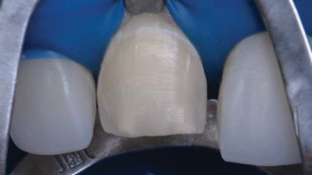
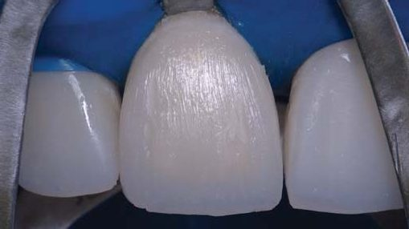
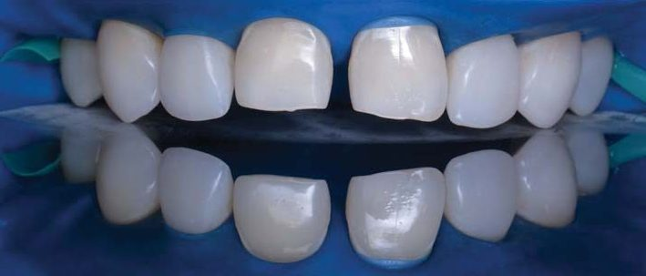
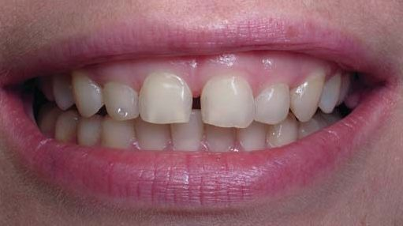
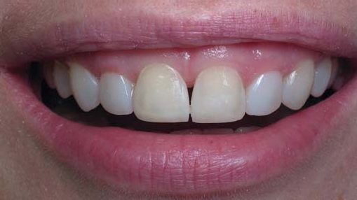
При втручанні у центральні різці зроблено поверхневе препарування фінішними борами з вестибулярної та частково оральної поверхні, адгезивну підготовку тканин методом тотального протравлювання і внесення адгезивної системи Prime&Bond Universal (Dentsply Sirona). Помітно значний профіцит місця для коронки. Реставраційно збільшуємо топографічні об’єми емалі відтінками матеріалу Esthet-X HD (XL, YE) (Dentsply Sirona).
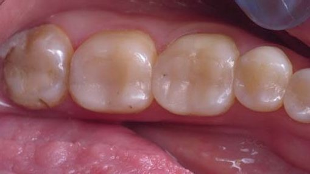
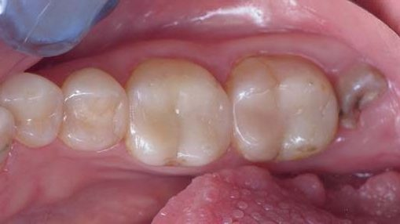
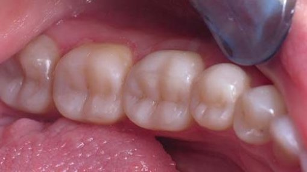
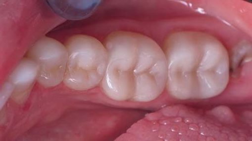
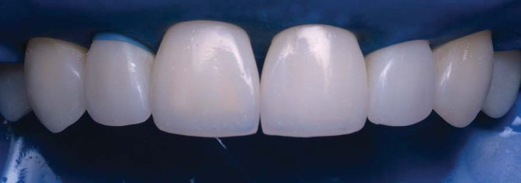
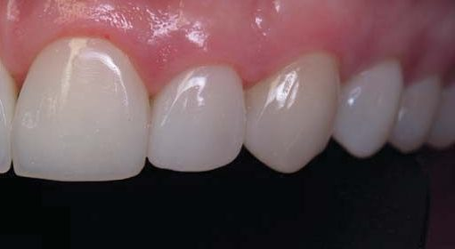
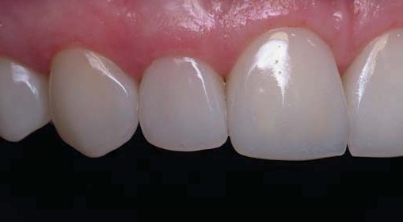
Пряма реставрація нижніх бічних зубів
До всіх нижніх та верхніх секстантів застосовувалася однакова послідовність використання матеріалів і однакові принципи реставрації. При правильному використанні високонаповнений та наногібридний композит — винятковий матеріал для таких ультраконсервативних реставрацій. У бічних ділянках у цієї пацієнтки робилася заміна об'ємних старих реставрацій і були порожнини з підвищеним С-фактором (фактором конфігурації порожнини), що вимагало додаткового застосування текучого композиту в ролі замінника дентину як основи реставрацій класів I та II за Блеком. Фінальні зображення демонструють хорошу естетичну інтеграцію композитного відновлення в анатомію, а отже і функцію бічних зубів.
Пряма реставрація нижніх передніх зубів
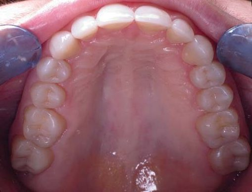
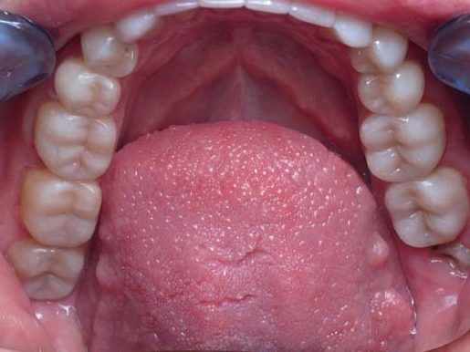
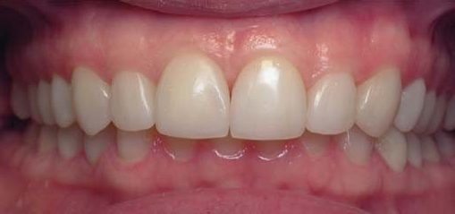
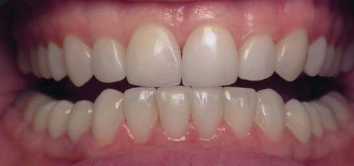
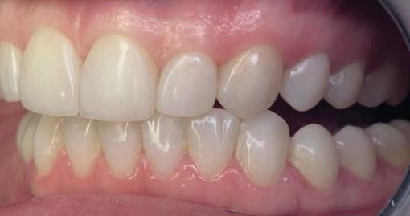
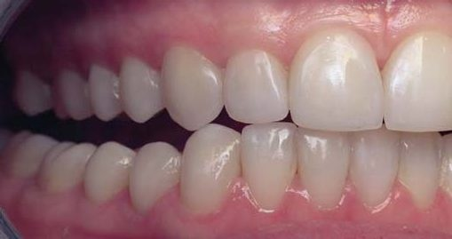
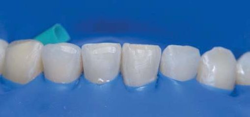
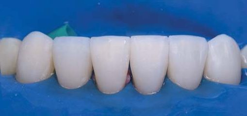
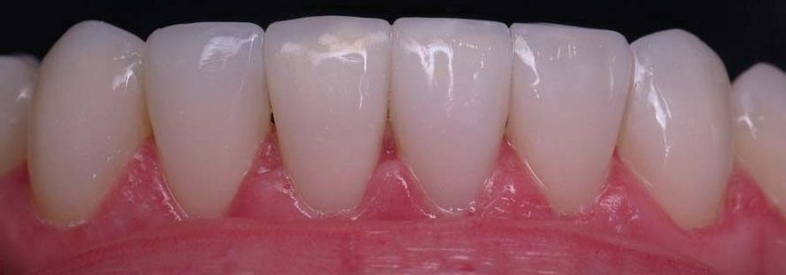
Після завершення реставрації при лівому і правому ікловому веденні досягнуто контакту тільки іклів, всі інші зуби перебувають у роз'єднанні. Саме це захистить реставровані зуби від перевантаження, стирання та можливих відколів. У передньому змиканні досягнуто контакту верхніх центральних різців і чотирьох нижніх. Враховуючи наявність у пацієнтки бруксизму, після закінчення лікування було виготовлено захисні міорелаксуючі силіконові капи на нижню щелепу.
Весь протокол функціональної реабілітації виконано за 5 робочих днів по 6 годин. Після контрольної фотосесії зробленої реставрації було призначено наступний візит приблизно через місяць.
Світлини зроблено через 2 місяці після реставрації. Протягом цього часу не робилися професійна гігієна та полірування зубів, проте поверхня нанокомпозиту демонструє природний блиск. Слід врахувати, що пацієнтка сама стоматологиня і ретельно дотримується рекомендацій щодо гігієнічного догляду за зубами й реставраціями. Під час огляду жодних больових симптомів та дискомфорту не виявлено, як і сколів на реставраціях. Пацієнтка в повному обсязі схвалила усі зроблені реставрації з урахуванням нових естетичних та фонетичних аспектів.
Пацієнтці надано рекомендації щодо харчування, інструкції з безпечного чищення, а також виготовлена захисна капа. Капа — досить ефективний засіб запобігання сколам та стиранню реставрацій. Частиною інформаційної фази лікування є повідомлення пацієнтові про можливість ремонту або заміни реставрації. Можливість ремонту композитної реставрації за один візит — одна з переваг цього методу.
Краса, здоров’я і Свобода —
Це в наших душах триєдине…
Нас злий агресор не здолає —
Бо переможе Україна!
Висновки
Клінічні дослідження засвідчили, що композитні реставрації при лікуванні незначного стирання зубів — це оптимальний, консервативний і логічний метод. Він має мінімальні можливі ускладнення у вигляді відколів матеріалу, які легко скоригувати за допомогою ремонту або заміни реставрації за один візит.
Поширеність стирання зубів є проблемою для стоматологічної команди і має мультифакторне походження. Зростає важливість діагностики ранніх ознак стирання зубів з метою вжиття належних профілактичних, а за необхідності реставраційних заходів з акцентом на біомеханіку та довготерміновий захист зубних тканин.
Література
- Радлінський С. В. Реставрація з розрахунку: верхні латеральні різці аномальної форми // ДентАрт. — 2013. — №2. — С. 29–40.
- Дічі Д. Безпрепарувальна превентивна реабілітація зубів при стиранні у вільній техніці // ДентАрт. — 2019. — №1. — С. 5–15.
Опануйте авторські техніки прямої реставрації з Ольгою Пономаренко
Розклад курсів